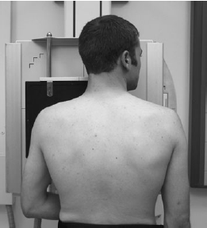

Clavicle(PA)
Centering point:Directed to the middle of the clavicle

Cassette Size:24cm x 30cm (10 x 12ins)
Landscape
Exposure Factors:60kVp on
12MaS
FFD:100cm
Bucky/Grid:Moving or stationary grid
Filter:No
Collimation:Four sides of collimation
Collimate on sides to the soft tissue borders
Lower margin to include proximal radius and ulna, Upper margin to include distal humerus
Pathologies:Fractures and dislocations
Position of patient and cassette
- The patient sits or stands facing an erect cassette holder.
- The patient’s position is adjusted so that the middle of the
clavicle is in the centre of the cassette.
- Supinate hand and align forearm to long axis of cassette.
- The patient’s head is turned away from the side being examined
and the affected shoulder rotated slightly forward to
allow the affected clavicle to be brought into close contact
with the Bucky.